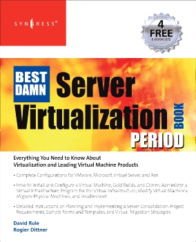
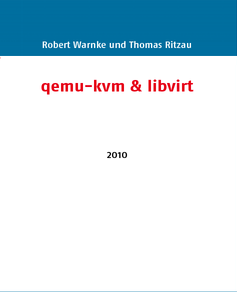

Consolidación de TICs
F.R.C.U. - U.T.N.
Ciclo Lectivo 2017
Datos de la cátedra
- Nombre: Consolidación de Tecnologías de la Información y las Comunicaciones.
- Código: K955Q
- Área: Computación.
- Régimen de Dictado: Cuatrimestral.
- Carga Horaria Semanal: 6 horas (cátedra).
Mecanismos de Contacto
- Página de la cátedra: http://fb.com/consolidaciontics
Docentes
Ing. Gabriel Arellano
Profesor Adjunto Ordinario
@AreTchE // gabrielarellano[arroba]gmail.com
Ing. Emilio Farabello
Jefe de Trabajos Prácticos
Horarios de Cursada
Miércoles de 19:00 a 23:55 (Laboratorio LISI)
Horarios de Consulta
Miércoles 17:00 a 19:00 (Oficina 35)
Objetivos
Capacitar al alumno en el análisis, diseño e implementación de infraestructura que soporte el funcionamiento de los sistemas de información, utilizando tecnologías de virtualización que permitan consolidar los servidores, el almacenamiento y las comunicaciones de la organización.
Programa Sintético
Problemas de los Centros de Cómputo. Tecnologías de Consolidación de Servidores. Tecnologías de Consolidación de Almacenamiento y Redes. Construyendo y Administrando una Infraestructura Virtualizada. Cloud Computing.
Programa Analítico
- Introducción a la Consolidación de TICs
- Tecnologías de Consolidación de Servidores
- Tecnologías de Consolidación de Almacenamiento y Redes
- Cloud Computing
Evaluación
Prácticas de Laboratorio
Propuesta de Trabajo Práctico Final
Defensa de Trabajo Práctico Final
Recursos didácticos
- Lista de lecturas.
- Presentaciones.
- Guías de Laboratorio.
- Máquinas Virtuales y Emuladores.
Libros de Cabecera
The Best Damn Server Virtualization Book
- Autores: Rogier Dittner, David Rule Jr.
- Editorial: Syngress Publishing, Inc.
- Edición: 1era. Edición (2007).
- ISBN: 978-1-59749-217-1.
Libros de Cabecera
QEMU, Kernel-based Virtual Machine (KVM), Xen & libvirt
- Autores: R. Warnke, T. Ritzau
- Editorial: Books on Demand GmbH.
- Edición: Edición 2010.
- ISBN: 978-3-8370-0876-0.
Libros de Cabecera

Introduction to Storage Area Networks and System Networking
- Autores: Beck, Ibarra, Kumaravel, Miklas
- Editorial: Vervante.
- Edición: 5ta. Edición (2012).
- ISBN: 978-0738437132.
Libros de Cabecera
Cloud Computing
- Autores: Paul Fisher
- Editorial: Springer-Verlag New York Inc.
- Edición: Edición 2011.
- ISBN: 978-1430227243.
Gracias!
http://aretche.github.io/slides-consolidacion/00-presentacion/
Esta obra de Gabriel Arellano está bajo una licencia Creative Commons Atribución-CompartirIgual 4.0 Internacional.